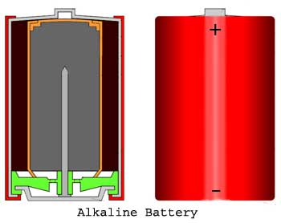

batteries have become one of the most important and most used equipments these days. batteries are used where power supply is not regular, where low voltage is required (i.e. lower than supply voltage); watches, mobiles and many other small equipments that require lesser voltage, mainly run on battery . The main advantage of battery are that, they can be charged and used if the capability of supplying power reduces. Cells are the unit of battery , many cells complete a battery . There are mainly two types of battery ,

The first Alkaline battery was brought into market by Eveready Battery , Toronto. It was developed by Lew Urry who was attached to this company as a chemical engineer.
Lew Urry developed the small alkaline battery in 1949. The inventor was working for the Eveready Battery Co. at their research laboratory in Parma, Ohio. Alkaline battery last five to eight times as long as zinc-carbon cells, their predecessors.
Alkaline Batteries
In any kind of battery , electrolysis is the main method that supports the running of a battery . Electrolysis basically means chemical reaction while conducting electric current through a mixture. Electrolysis is used not only for making battery , but for various purposes also. These battery are introduced to overcome the weight and mechanical weakness of the lead plates. The main working principle of the alkaline battery is based on the reaction between zinc (Zn) and manganese dioxide (MnO2). Alkaline battery is so named because the electrolyte used in it is potassium hydroxide, a purely alkaline substance.Advantages of Alkaline Battery
- This has high energy density.
- This battery performs equally well in both continuous and intermittent applications.
- This performs equally well in low and as well as high rate of discharge.
- This also performs equally well at ambient temperature as well as at low temperature.
- Alkaline battery has also low internal resistance.
- It has enough longer self life.
- Leakage is low in this battery .
- It has better dimensional stability.
Disadvantage of Alkaline Battery
Construction of Alkaline Battery
The body of the battery is made of a hollow steel drum. This drum contains all materials of the battery and it also serves as cathode of the battery . The positive terminal of the battery is projected from the top of this drum. Fine grained manganese dioxide (MnO2) powder mixed with coal dust is molted to the inner peripheral surface of the empty cylindrical drum. This molded mixture serves as cathode mixture of the alkaline battery . The inner surface of the thick layer of cathode mixture is covered with paper separator. The central space, inside this paper separator is filled by zinc powder with potassium hydroxide electrolyte. The zinc serves as anode and its powder form increases the contact surface. The paper separator soaked with potassium hydroxide, holds the electrolyte in between cathode(MnO2) and anode(Zn). A metallic pin (preferably made of brass) is inserted along the central axis of the alkaline battery to collect negative charge. This pin is called negative collector pin. This pin is in touch with metallic end sealed cap. There is a plastic cover just inside the Metallic end sealed cap and this plastic cover electrically separates positive steel drum and negative end cap of alkaline battery .
Construction of Alkaline Battery
In an alkaline battery cell, the powder zinc serves as anode, manganese dioxide serves as cathode and potassium hydroxide serves as electrolyte.
First half reaction is,
Second half reaction is,
Overall reaction,
An alkaline battery cell is rated for 1.5 V. A new non discharged alkaline cell shows a voltage of 1.50 to 1.65 V. The average voltage under load condition may be 1.1 to 1.3 V. AA alkaline cell is generally rated for 700 mA.
There are various types of alkaline battery depending on various parameters.
Depending on the composition of the active materials of the plates, there are four types of battery . They are as follows,
- Nickel iron (or Edison).
- Nickel- cadmium (or Nife).
- Silver zinc.
- Alkum battery .
Depending on the method of assembling, these battery are classified as sealed and non-sealed cells or battery .
Depending on the design plates, alkaline battery are classified as enclosed pocket and open pocket type battery .
Alkaline Batteries
Use of Alkaline Batteries
Various types of these battery are there and different battery are used for different purposes. Like, nickel iron battery are used for propulsion of industrial trucks and mine locomotives. In air conditions also, this type of battery are used. Another type of alkaline battery is Nickel-cadmium battery , they get used in commercial airlines, military aeroplane for initiating main engine. So, we can say that the alkaline battery are mainly used in moving vehicles and industrial purposes.
 by
by